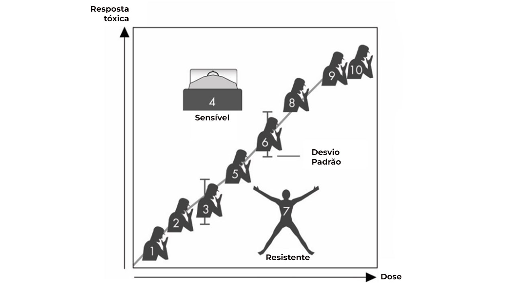
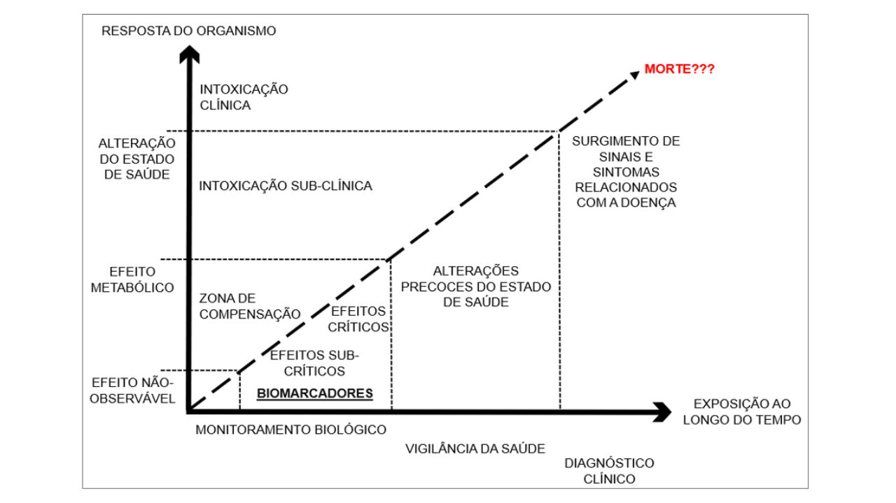

MÓDULO 2 | AULA 5 Toxicologia Ocupacional
Monitoramento Biológico (MB) OU Biomonitoramento
É a determinação dos níveis de agentes químicos (presentes no ambiente de trabalho), e/ou seus produtos de biotransformação (metabólitos), ou efeitos à saúde, em fluídos biológicos, tecidos, excreções ou ar exalado, com o objetivo de caracterizar os riscos à saúde decorrentes da exposição ocupacional a substâncias químicas, comparando-se os resultados obtidos com referências apropriadas.
O MB propõe a avaliação do risco derivado da exposição em função da quantidade que efetivamente foi absorvida pelo organismo, e não pela presença do AT no ambiente. Assim:
- Obtemos informações da exposição sobre o próprio indivíduo exposto;
- Avaliamos a absorção sistêmica e sua associação aos efeitos biológicos;
- Levamos em consideração a absorção por diferentes vias de exposição de uma substância química, permitindo avaliar a exposição global do indivíduo ou população, por ex., pela via respiratória e dérmica, concomitantemente.
O MB só é possível quando houver informações toxicológicas suficientes sobre o mecanismo de ação do AT. Ou seja, precisamos da base da Toxicologia (Toxicocinética e Toxicodinâmica) para compreender o que deve ser analisado.
Indicadores Biológicos de Exposição (IBE) ou Biomarcadores
Compreende toda substância ou seu produto de biotransformação, assim como qualquer alteração bioquímica precoce, cuja determinação nos fluidos biológicos, tecidos ou ar exalado avalie a intensidade da exposição e o risco à saúde:
- Não visa fixação de limites entre o que se considera saudável e doente;
- É o valor máximo do biomarcador para o qual se supõe que a maioria das pessoas ocupacionalmente expostas não corre risco de danos à saúde;
- São parâmetros biológicos que refletem a interação: Agente Químico X Organismo.
No Brasil, a Norma Regulamentadora nº 7 (NR 7 - PROGRAMA DE CONTROLE MÉDICO DE SAÚDE OCUPACIONAL - PCMSO) estabelece diretrizes e requisitos para o desenvolvimento do PCMSO nas organizações, com o objetivo de proteger e preservar a saúde de trabalhadores. Nesta norma (Anexo I - Quadros 1 e 2), são definidos os Indicadores Biológicos de Exposição para aproximadamente 50 AT.
O efeito precoce avaliado pelos biomarcadores dá a eles uma certa capacidade preditiva, uma vez que eles representam o risco daquela exposição ocupacional à saúde, pois indicam que a exposição está ocorrendo e que está afetando o organismo, o que, sem a adoção de medidas de segurança ou afastamento do trabalhador da fonte de exposição, a longo prazo pode levar ao adoecimento.
Leia o artigo e saiba como é realizado um estudo de biomonitoramento da exposição ocupacional a metais: “Biomonitoramento dos bombeiros militares que trabalharam em Brumadinho/MG, Brasil, após o rompimento da barragem de rejeitos (Barata-Silva et al., 2025)”.
Biomarcador de Exposição
É a medida de SQ, ou de seus produtos de biotransformação (metabólitos) em sangue, urina, tecidos, secreções, excreções, ar exalado, ou alguma combinação desses, para estimar a exposição ou o risco à saúde, quando comparados com uma referência apropriada. Eles representam a dose interna, ou seja, a quantidade da SQ que penetrou no organismo e foi efetivamente absorvida.
Exemplo
- Chumbo no sangue (Pb-S) para avaliar exposição ao Pb e Chumbo na urina (Pb-U) para avaliar exposição ao Pb tetraetila;
- Arsênio inorgânico e seus metabólitos metilados na urina para avaliar a exposição ao As elementar e seus compostos inorgânicos;
- Cromo na urina para avaliar exposição ao Cr hexavalente;
- Mercúrio na urina para avaliar a exposição Hg metálico;
- Cádmio na urina para avaliar a exposição ao Cd e seus compostos inorgânicos;
- Ácido trans, trans-mucônico (ATTM) para avaliar exposição ao benzeno;
- 2,5-hexanodiona para avaliar exposição ao n-hexano.
Biomarcador de Efeito
É a medida de efeitos biológicos precoces, para os quais ainda não foi estabelecida relação com prejuízos à saúde, em trabalhadores expostos, para estimar a exposição e/ou os riscos para saúde, quando comparados com referência apropriada. Eles representam a ação do AT, ou seu metabólito, no órgão alvo.
Exemplo
- Ácido delta-aminolevulínico na urina (ALA-U) para avaliar exposição ao Pb;
- Atividade da enzima ácido delta-aminolevulínico desidratase (ALA-D) para avaliar exposição ao Pb
- Metalotioneína para avaliar exposição ao Cádmio
- Atividade das enzimas acetilcolinesterase e butirilcolinesterase para avaliar exposição a agrotóxicos do tipo organofosforados e carbamatos
- Metemoglobina no sangue para avaliar exposição a agentes metemoglobinizantes, tais como, anilina e nitrobenzeno
Biomarcador de Susceptibilidade
É um indicador que está relacionado com a capacidade congênita de um indivíduo de responder a uma substância tóxica, pois ele influencia na extensão da doença provocada pela exposição ao agente tóxico;
Exemplo
- Polimorfismos de enzimas que metabolizam AT.

Compreender o papel de cada tipo de biomarcador, sua relação com a exposição e o tipo efeito que ele representa no monitoramento biológico é de fundamental importância para melhorar a nossa compreensão sobre a relação existente entre a exposição a contaminantes químicos e os seus efeitos tóxicos na saúde humana.

Valor de Referência (VR) ou Basal
Representam a quantidade de uma SQ, seu metabólito ou efeito, que está presente em materiais biológicos, independentemente da exposição ocupacional. Eles são determinados em uma população de indivíduos saudáveis, semelhante à exposta, cuja característica principal é não estar exposta ocupacional ou ambientalmente.
O VR é a realidade da exposição da população como um todo, de todas as fontes e por todas as vias, para qualquer pessoa, animal e compartimento ambiental. Essa exposição pode advir de diversas fontes, tais como:
- Alimentos
- Água
- Solos
- Medicamentos
- Hábitos (p. ex.: tabagismo)
- Poluição ambiental
- Aditivos alimentares, etc.
O estabelecimento de VR's permite compreender como valores encontrados em trabalhadores expostos ocupacionalmente, mesmo que abaixo dos limites estabelecidos em normas, ainda sim, podem ser superiores ao considerado “normal” de uma população, sendo indicativo precoce do risco desta exposição.
Conheça o site do consórcio que reúne os principais especialistas europeus em biomonitoramento humano de 24 Estados-Membros da União Europeia, bem como da Noruega, Islândia, Israel e Suíça. E leia sobre a iniciativa acessando o endereço a seguir: https://www.hbm4eu.eu/wp-content/uploads/2017/03/Portuguese-1.pdf
Monitoramento Ambiental e Biológico - vantagens e desvantagens
| Quadro 2: Comparação MA X MB | ||
|---|---|---|
| Monitoramento Ambiental | Monitoramento Biológico | |
|
|
|